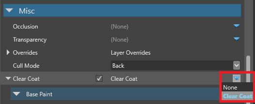

クリアコート シェーディング
中級 アーティスト プログラマー
車の塗装を再現するために、物理ベースレンダリング（PBR）を使ったクリアコートシェーディングを使用しています。

実際の車では、下図のように、ボディに3層の塗装が施されているのが一般的です。
Stride では、シェーディングをシンプルにするために、ベースコート（オプションとしてメタルフレークを含む）とクリアコートのレイヤーのみをシミュレートします。カメラがマテリアルからどれだけ離れているかによって、Strideは コートのレイヤーを合成します。これにより、メタルフレークの法線マップを起因とする視覚アーティファクトが軽減されます（カメラがマテリアルから遠ざかると目立ってきます）。
クリアコートシェーディングには、マテリアル レイヤーを使って手動でエフェクトを作ることに比べて、いくつかの利点があります。
- レイヤーは距離に応じて合成されます。
- パフォーマンスが向上します。
- 見た目がよくなります。
クリアコートマテリアルを追加する
Stride には、クリアコートマテリアルのテンプレートが含まれています。これをアセットとして追加するには、アセットビューで [Add asset] をクリックし、[Material] > [PBR material: clear coar] を選択します。

また、自分でクリアコートのプロパティを設定することもできます。
クリアコートシェーディングを使用したいマテリアルを選択します。
プロパティグリッドで、Misc プロパティの Clear coat の横にある
 （置換）をクリックし、Clear coat を選択します。
（置換）をクリックし、Clear coat を選択します。
Note
クリアコートシェーディングを正しく動作させるには、マテリアルの Shading プロパティで、Diffuse, Specular, Specular model を有効にする必要があります。
プロパティ
クリアコートシェーダーのプロパティは、[Misc] > [Clear coat] でアクセスできます。これらは3つのパートに分かれています。ベースペイントとオプションのメタルフレークはベースコートをシミュレートし、クリアコートプロパティはクリアコートをシミュレートします。
メタルフレークのプロパティは、メタリックペイントエフェクトをシミュレートします。このエフェクトを無効にするには、メタルフレークの法線マップを削除します。

| プロパティ | 説明 |
|---|---|
| Base paint diffuse map | ベースペイントレイヤー（最も下のレイヤー）が使用するディフューズ マップです。これによってレイヤーの色が決まります。 |
| Base paint gloss map | ベースペイントレイヤーが使用するグロス マップです。コヒーレントな結果を得るためには、metal flake normal map をマスクとして使用します。 |
| Metal flakes diffuse map | メタルフレークレイヤー（ベースペイントの上にあるレイヤー）が使用するディフューズ マップです。コヒーレントな結果を得るためには、ベースペイントの値に近い値を使用してください。 |
| Metal flakes gloss map | メタルフレークレイヤーが使用するグロスマップです。コヒーレントな結果を得るには、Metal flake normal map をマスクとして使用します。 |
| Metal flakes metalness map | メタルフレークレイヤーが使用するメタルネス マップです。最良の結果を得るためには、高い値を使用してください。 |
| Metal flake normal map | メタルフレークレイヤーが使用する法線 マップです。これにより、フレークのジオメトリが形成されます。メタルフレークの法線マップ（StrideClearCoatMetalFlakesNM）は、Stride のアセットパッケージに含まれています。テクスチャの UV スケールが大きい場合は、下の方にある Use random texture coordinates を有効にすると、タイリング効果が軽減されます。メタルフレークエフェクトを無効にするには、法線マップを削除します。 |
| Coat gloss map | クリアコートレイヤーで使用されるグロスマップです。この値を変更すると、さまざまな種類の塗料（マットなど）をシミュレートできます。 |
| Clear coat metalness map | クリアコートレイヤーが使用するメタルネス マップです。 |
| Orange peel normal map | 「オレンジの皮」を表現するためにクリアコートレイヤーが使用する法線マップです。これは、異なる角度で光を反射して塗装の欠陥をシミュレートすることで、テクスチャがオレンジの皮のようにデコボコしているように見せます。オレンジピール法線マップ(StrideClearCoatOrangePeelNM)は、Stride のアセットパッケージに含まれています。 |
| Layer transition distance | ベースペイントレイヤーからメタルフレークレイヤーに遷移する際の距離（単位：メートル）です。これにより、メタルフレークの法線マップに起因する視覚アーティファクト（カメラがマテリアルから遠ざかるにつれて目立ちやすくなります）を防ぐことができます。 |
タイリングやアーティファクトを低減する
二項演算子を使用するプロパティでは、正規化された値（つまり0.0から1.0の間の値）を使用する必要があります。例えば、次のスクリーンショットでは、Left 演算子は 0.5 という値を使用しています。

値を 1.0 以上に設定すると、次の画像のように、タイリングアーチファクトが発生する場合があります（グリッドパターンに着目してください）。

StrideClearCoatMetalFlakesNM
Stride のアセットパッケージに含まれるメタルフレーク法線マップ（StrideClearCoatMetalFlakesNM）のメタルフレークは、かなり大きいです。このため、以下のようにすることをお勧めします。
高い UV スケール係数を使用してテクスチャーをタイル状にする（それによりフレークを縮小する）。
Use random texture coordinates を有効にして、明らさまなタイリング効果を防ぐ。

Note
Use random texture coordinates オプションは、コストがかかるため、モバイルプラットフォームでの使用はお勧めできません。
また、より小さなメタルフレークで密度の高い法線マップを使用する方法もあります。